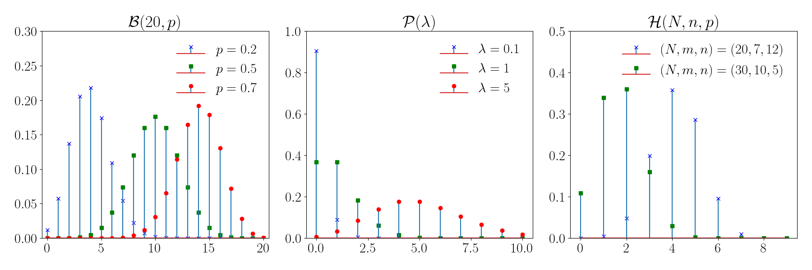
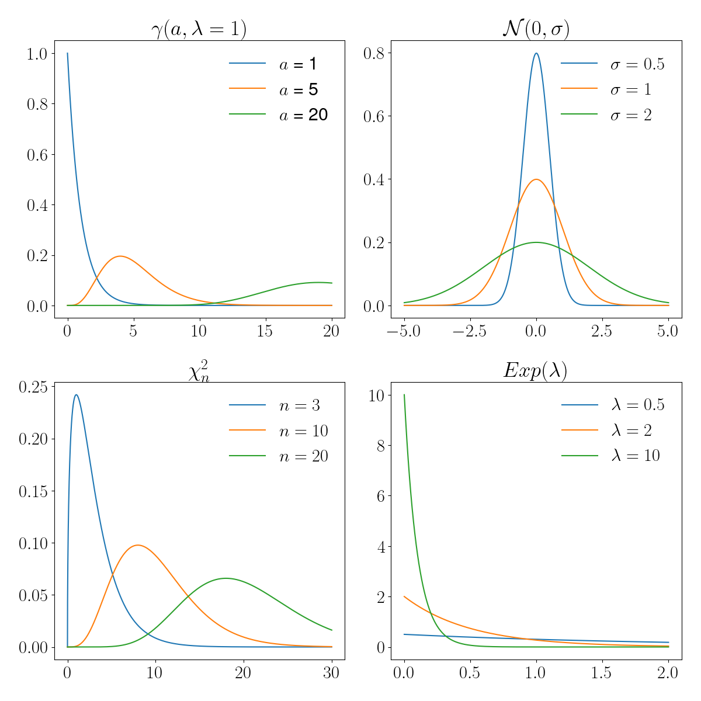

Elements de statistiques
Contents
Elements de statistiques#
Dans l’expression “étude statistique”, il faut distinguer :
les données statistiques : suivant l’étude, plusieurs problèmes peuvent être posés :
Recueil des données (brutes) avec notamment le problème des sondages
Nature des données avec éventuellement la transformation des données brutes, notamment pour les séries chronologiques (série corrigée des variations saisonnières)
Organisation des données : il s’agit le plus souvent de résumer l’information par les techniques de la statistique descriptive
le modèle mathématique : une analyse du phénomène étudié doit permettre de traduire les problèmes posés par l’étude dans un langage formel, celui des probabilités. Après avoir fait des choix, des hypothèses sur la loi de probabilité et sur les paramètres de cette loi, on s’efforce de se placer dans un modèle statistique dans lequel des outils théoriques permettent de résoudre un certain nombre de problèmes théoriques. Dans ce modèle théorique, il s’agit de donner une interprétation aux données expérimentales et, souvent, des hypothèses implificatrices de “même loi” et d’indépendance sont faites.
l’analyse statistique : l’utilisation d’outils statistiques adaptés au modèle retenu permet de faire l’interface entre les données statistiques et le modèle théorique choisi pour décrire le phénomène étudié.
L’étude statistique peut alors se traduire sous diverses formes :
préciser le modèle choisi, en estimant les paramètres intervenant dans celui-ci
juger la validité d’hypothèses faites sur ces paramètres qui se traduira non pas en ‘’confirmation d’hypothèses’’, mais en ‘’détecteur d’hypothèses fausses’’
juger l’adéquation du modèle retenu en termes de lois de probabilité avec la même réserve que ci-dessus
Les résultats théoriques devront être interprétés dans le contexte de l’étude en considérant que ces résultats ont été obtenus dans le cadre d’un modèle théorique précis, d’où la nécessité d’une analyse correcte et d’une bonne formalisation. De plus, il faudra prendre en compte les techniques utilisées, qui ne permettent de répondre qu’à des questions précises. Enfin, dans le cas d’une application pratique, il faudra garder à l’esprit que les conclusions auront des conséquences économiques (ou autres).
Echantillon d’une variable aléatoire#
Définition#
Definition 16 (Echantillon)
Soit une variable aléatoire \(X:(\Omega,\mathcal A,P)\mapsto \mathbb{R}\). On appelle \(n\)-échantillon de la variable aléatoire parente \(X\) la donnée de \(n\) variables aléatoires \(X_1\cdots X_n\), définies sur le même espace, indépendantes, ayant même loi que \(X\).
On a donc pour tout \((x_1\cdots x_n)^T\in\mathbb{R}^n\)
\(P(X_1<x_1\cdots X_n<x_n)=P(X_1<x_1)\cdots P(X_n<x_n)=P(X<x_1)\cdots P(X<x_n)\)
On considère alors une expérience aléatoire \(\mathcal E\) décrite par l’intermédiaire de la variable aléatoire \(X\). Considérer un \(n\) échantillon de \(X\) consiste à supposer la possibilité de \(n\) répétitions de l’expérience \(\mathcal E\) dans des conditions identiques, sans interactions entre elles.
Chaque répétition conduit à l’observation d’une valeur prise par \(X\), d’où l’observation de \(n\) valeurs \(x_1\cdots x_n\) à la suite des \(n\) répétitions, considérées comme une valeur effectivement prise par le \(n\)-échantillon \((X_1\cdots X_n)\) de \(X\). Les valeurs \((x_1\cdots x_n)\) relèvent de l’observation : ce sont les données statistiques recueillies à la suite des \(n\) expériences : elles sont appelées réalisation du \(n\)-échantillon.
A noter que les hypothèses de même loi et d’indépendance sont simplificatrices.
Schéma de Bernoulli et modèle binomial#
Si \(\mathcal E\) n’a que deux éventualités possibles (réalisation ou non d’un évènement \(A\)), alors l’expérience peut être décrite par l’intermédiaire d’une variable aléatoire \(X\) (\(\mathbb{1}_A\), fonction indicatrice de \(A\)), de Bernoulli \(X:(\Omega,\mathcal A,P)\mapsto \{0,1\}\) avec \(P(X=1)=P(A)=p\in]0,1[\).
Si \(\mathcal E\) est répétée \(n\) fois dans des conditions identiques, sans interaction entre elles, on considère un \(n\)-échantillon \((X_1\cdots X_n)\) de variable aléatoire parente \(X\). Les valeurs prises par la variable aléatoire \(S_n=X_1+\cdots X_n\) représentent le nombre de réalisations de \(A\) à la suite des \(n\) répétitions. Une telle situation est dite relever du schéma de Bernoulli.
Property 4
\(S_n:(\Omega,\mathcal A,P)\mapsto [\![0,n]\!]\) a une loi binomiale \(\mathcal{B}(n,p)\) :
\(\forall k\in[\![0,n]\!]\; P(S_n=k)=\begin{pmatrix}n\\k\end{pmatrix} p^k (1-p)^{n-k}\)
\(\mathbb{E}(S_n)=np,\; \mathbb{V}(S_n)=np(1-p)\)
En effet, d’après l’indépendance pour toute suite (\(\delta_1\cdots \delta_n\)) avec pour tout \(k\in[\![1,n]\!]\) \(\delta_k\in\{0,1\}\), on a :
\(P(X_1=\delta_1\cdots X_n=\delta_n) = \displaystyle\prod_{k=1}^n P(X_k=\delta_k) = \displaystyle\prod_{k=1}^n P(X=\delta_k)=p^{s_n}(1-p)^{(n-s_n)}\)
avec \(\delta_1+\cdots+ \delta_n=s_n\) , les variables aléatoires ayant même loi de Bernoulli que \(X\).
Le nombre de solutions de \(\delta_1+\cdots+ \delta_n=s_n\) avec \(s_n\in[\![0,n]\!]\) et \(\delta_k\in\{0,1\}\) est \(\begin{pmatrix}s_n\\n\end{pmatrix}\), d’où le résultat.
D’après la linéarité de l’espérance et l’égalité de Bienaymé, on a de plus \(\mathbb{E}(S_n) = \displaystyle\sum_{k=1}^n \mathbb{E}(X_k)=n\mathbb{E}(X)=np\quad \mathbb{V}(S_n)=\displaystyle\sum_{k=1}^n \mathbb{V}(X_k)=n\mathbb{V}(X)=np(1-p)\)
Moyenne et variances empiriques d’un \(n\)-échantillon#
Etant donné un \(n\)-échantillon \((X_1\cdots X_n)\) d’une variable aléatoire parente \(X\), on appelle :
moyenne empirique du \(n\)-échantillon la variable aléatoire
- \[\bar{X}_n=\frac1n \displaystyle\sum_{k=1}^n X_k\]
variance empirique biaisée du \(n\)-échantillon la variable aléatoire (Ne pas confondre avec la variable \(S_n\) du schéma de Bernoulli)
variance empirique non biaisée du \(n\)-échantillon la variable aléatoire
On a bien sûr \((n-1){S'}_n^2=nS_n^2\).
Les valeurs prises par \(\bar{X}_n\) coïncident avec la moyenne expérimentale \(\bar{x}_n\) des données expérimentales \((x_1\cdots x_n)\), réalisation du \(n\)-échantillon. De même pour \(S_n^2\) pour la variance expérimentale.
Property 5
\(\mathbb{E}(\bar{X}_n)= \mathbb{E}(X)=m\; ;\; \mathbb{V}(\bar{X}_n) = \frac{\mathbb{V}(X)}{n}=\frac{\sigma^2}{n}\)
\(\mathbb{E}(S_n^2) = \frac{n-1}{n}\sigma^2\; ;\; \mathbb{E}({S'}_n^2)=\sigma^2\)
Sous l’hypothèse de normalité, \(\mathbb{V}({S'}_n^2)=\frac{2\sigma^4}{n-1}\)
En effet :
Immédiat d’après la linéarité de l’espérance, l’égalité de Bienaymé et la propriété \(\mathbb{V}(\alpha X)=\alpha^2\mathbb{V}(X)\)
\((n-1){S'}_n^2=\displaystyle\sum_{k=1}^n X_k^2-n\bar{X_n^2}\) d’où
\((n-1)\mathbb{E}({S'}_n^2)=\displaystyle\sum_{k=1}^n\mathbb{E}(X_k^2)-n\mathbb{E}(\bar{X_n^2})=n(\sigma^2+m^2)-n\left (\frac{\sigma^2}{n}+m^2 \right )\) et le résultat.
Le dernier point est admis.
Echantillons de variables aléatoires normales#
Les lois de probabilité usuelles sont rappelées en fin de ce chapitre ({ref}`loisusuelles).
Etude d’un \(n\)-échantillon#
Soit un \(n\)-échantillon \(X_1\cdots X_n\) de variable aléatoire parente \(X\) de loi \(\mathcal{N}(m,\sigma)\). On a les résultats suivants :
\(\sqrt{n} \frac{\bar{X}_n-m}{\sigma}\) suit une loi \(\mathcal{N}(0,1)\)
\(\frac{nS_n^2}{\sigma^2} = \frac{(n-1)S'^2_n}{\sigma^2}\) suit une loi \(\chi^2_{n-1}\)
les variables aléatoires \(\bar{X}_n\) et \(S_n^2\) sont indépendantes
\(T=\sqrt{n}\frac{\bar{X}_n-m}{S'_n}=\sqrt{n-1}\frac{\bar{X}_n-m}{S_n}\) suit une loi de Student à \(n-1\) degrés de liberté.
Etude de deux échantillons indépendants#
Soient un \(n\)-échantillon \(X_1\cdots X_n\) de \(X\) de loi \(\mathcal{N}(m_1,\sigma_1)\), un \(m\)-échantillon \(Y_1\cdots Y_m\) de \(Y\) de loi \(\mathcal{N}(m_2,\sigma_2)\), les échantillons étant indépendants. Avec des notations évidentes, on a les résultats suivants :
\(F = \frac{\sigma_2^2 S'^2_n(X)}{\sigma_1^2 S'^2_m(Y)} = \frac{(m-1)n}{(n-1)m}\frac{\sigma_2^2S_n^2(X)}{\sigma_1^2S_m^2(Y)}\) admet une loi de Fisher-Snédécor FS(\(n-1\),\(m-1\))
\(T = \sqrt{\frac{(n+m-2)mn}{m+n}}\frac{(\bar{X}_n-\bar{Y}_m)-(m_1-m_2)}{\sqrt{nS_n^2(X)+mS_m^2(Y)}}\) admet, sous l’hypothèse \(\sigma_1=\sigma_2\), une loi de Student à \((n+m-2)\) degrés de liberté.
Remark 5
Sous l’hypothèse \(\sigma_1=\sigma_2=\sigma\) :
\(\bar{X}_n-\bar{Y}_m\) suit une loi \(\mathcal{N}(m_1-m_2,\sigma\sqrt{\frac1n+\frac1m})\)
\(\frac{nS_n^2(X)}{\sigma^2}+\frac{mS_m^2(Y)}{\sigma^2}\) a une loi \(\chi^2_{n-1+m-1}\).
Loi des grands nombres#
Inégalité de Tchebychev#
Theorem 2
Soit une variable aléatoire \(X\) de moyenne \(m\) et d’écart-type \(\sigma\). Alors :
\((\forall t>0)\; P(|X-m|\geq t)\leq \frac{\sigma^2}{t^2}\quad\textrm{et}\quad (\forall u>0)\; P(\frac{|X-m|}{\sigma}\geq u)\leq \frac{1}{u^2}\)
En effet : Soit \(A=\left \{|X-m|\geq t\right \}\) et \(\mathbb{1}_A(\omega)\) = 1 si \(\omega\in A\), 0 sinon. Alors :
\((\forall \omega\in\Omega)\; |X(\omega)-m|^2\geq |X(\omega)-m|^2\mathbb{1}_A(\omega) \geq t^2\mathbb{1}_A(\omega)\)
L’espérance étant croissante et vérifiant \(\mathbb{E}(\mathbb{1}_A)=P(A)\), on a \(\sigma^2=\mathbb{E}(|X-m|^2)\geq t^2P(A) = t^2P(|X-m|\geq t)\) et le résultat.
Remark 6
Ces inégalités, souvent très grossières et d’intéret essentiellement théorique, n’ont d’utilité que pour \(t>\sigma\) ou \(u>1\) (une probabilité est toujours inférieure à 1). La seconde donne un majorant de la probabilité d’observer des valeurs prises par \(X\) à l’extérieur de l’intervalle \([m-u\sigma,m+u\sigma]\)
Phénomène de régularité statistique#
Considérons plusieurs séquences de 100 lancers d’une pièce de monnaie et notons, pour chaque séquence, la suite \((f_n)_{n\geq 1}\) des fréquences des piles obtenus. Un exemple de simulation avec \(p=0.4\) est proposé dans la figure suivante avec le code ayant servi à la produire.
import numpy as np
from random import random
import matplotlib.pyplot as plt
def experience(n):
p=0.4
f = []
for j in range(n):
if random() <p:
f += [1.]
else:
f+=[0]
f = np.cumsum(f)
for i in range(n):
f[i] = float(f[i])/(i+1)
return(f)
n = 100
plt.figure(figsize=(12,6))
x = np.arange(n)
nb_sequences = 10
for i in range(nb_sequences):
f = experience(n)
plt.plot(x,f)
plt.xlabel('$n$',fontsize=16)
plt.ylabel('$f_n$',fontsize=16)
plt.axhline(y = 0.4, color = 'k', linestyle = '--')
plt.tight_layout()
La fluctuation de la fréquence est importante pour des petites valeurs de \(n\), puis elle s’atténue, pour se stabiliser autour d’une valeur voisine de \(p\).
Cette constatation expérimentale conduit aux remarques suivantes, qui sont précisées dans la suite dans le cadre théorique :
\(f_n\) donne une idée de la valeur de \(p\) avec une plus ou moins grande précision
la probabilité apparaît comme une fréquence limite.
Loi faible des grands nombres#
Theorem 3
Soit \((X_n)_{n\geq 1}\) une suite de variables aléatoires indépendantes, identiquement distribuées (i.i.d) de même loi qu’une variable \(X\), admettant une moyenne \(m\) et un écart-type \(\sigma\). Si \((\bar{X}_n)_{n\geq 1}\) est la suite des moyennes empiriques associée à \((X_n)_{n\geq 1}\) alors
\((\forall t>0)\; \displaystyle\lim_{n\rightarrow\infty} P(|\bar{X}_n-m|\geq t) = 0\)
On dit que la suite converge en probatilité vers \(m\) et on note \(\bar{X}_n\xrightarrow[n\rightarrow\infty]{P} m\)
C’est une conséquence immédiate de l’inégalité de Tchebychev : \(P(|\bar{X}_n-m|\geq t)\leq\frac{\sigma^2}{nt^2}\) puisque \(\mathbb{V}(\bar{X}_n)=\frac{\sigma^2}{n}\)
L’observation des valeurs prises par la moyenne empirique donne une bonne information sur la moyenne théorique \(m\) de \(X\). La précision, au sens ci-dessus, est d’autant meilleure que \(n\) est grand.
Loi forte des grands nombres#
avec les hypothèses précédentes, on peut montrer que
\(P(\{\omega\in\Omega, \displaystyle\lim_{n\rightarrow\infty} \bar{X}_n(\omega)=m\})=1\)
Sauf cas très improbable (avec probabilité nulle), la suite des réalisations \((\bar{x}_n)_{n\geq 1}\) des moyennes expérimentales des mesures converge vers la moyenne théorique \(m\). On dit que la suite \((\bar{X}_n)_{n\geq 1}\) converge presque sûrement vers \(m\) et on note \(\bar{X}_n\xrightarrow[n\rightarrow\infty]{p.s.} m\).
Remark 7
Si \(X=\mathbb{1}_A\) alors \(m=p=P(A)\) et la probabilité de l’évènement \(A\) apparaît comme une fréquence limite.
Approximation de \(\mathcal{B}(n,p)\) par la loi de Poisson \(\mathcal P(\lambda)\)#
Théorème d’analyse#
````{prf:theorem}` Si \(p\) est une fonction de \(n\) telle que \(\displaystyle\lim_{n\rightarrow\infty}np(n)=\lambda>0\), alors pour tout \(k\geq 0\)
\(\displaystyle\lim_{n\rightarrow\infty}\begin{pmatrix}n\\p\end{pmatrix} p^k(1-p)^{n-k} = e^{-\lambda}\frac{\lambda^k}{k!}\)
En effet
$\begin{pmatrix}n\\p\end{pmatrix} p^k(1-p)^{n-k}=\frac{n(n-1)\cdots (n-k+1)}{k!}p^k(1-p)^{n-k}$
$\begin{pmatrix}n\\p\end{pmatrix} p^k(1-p)^{n-k}=\frac{(np)^k}{k!}\displaystyle\prod_{j=0}^k\left (1-\frac{j}{n}\right )(1-p)^{n-k}$
et le résultat est démontré en remarquant que $\displaystyle\lim_{n\rightarrow\infty} p(n)=0$.
### Application
Soit $S_n$ une variable aléatoire de loi $\mathcal{B}(n,p)$. Lorsque $n$ est grand (>50) et $p$ petite ($np$<10), on peut approcher la loi de $S_n$ par une loi de Poisson $\mathcal P(np)$. On lit alors la valeur correspondante dans la table de la loi de Poisson, pour tout $k\in[\![0,n]\!]$
$P(S_n=k)\approx e^{-\lambda}\frac{\lambda^k}{k!}$
De plus, en remarquant que $\Sigma_n=n-S_n$ suit $\mathcal{B}(n,1-p)$, on a
$$P(\Sigma_n=k)=P(S_n=n-k)=\begin{pmatrix}n\\p\end{pmatrix} p^{n-k}(1-p)^{k} $$
et quand $n$ est grand (>50) et $p$ voisin de 1 ($n(1-p)<10$) on peut approcher la loi de $\Sigma_n$ par une loi de Poisson $\mathcal P(n(1-p))$.
## Théorème central limite
### Le T.C.L.
````{prf:theorem}`
Soit une suite $(X_n)_{n\geq 1}$ de variables aléatoires, i.i.d. de même loi qu'une variable parente $X$, définies sur le même espace $(\Omega,\mathcal A,P)$. On considère la suite des moyennes empiriques $(X_n)_{n\geq 1}$ des $n$-échantillons $(X_1\cdots X_n)$.
Si $X$ admet une moyenne $m$ et un écart-type $\sigma$, alors
$(\forall x\in\mathbb{R})\; \displaystyle\lim_{n\rightarrow\infty}P\left (\sqrt{n}\frac{\bar X_n-m}{\sigma} <x\right) = \phi(x)$
où $ \phi(x)$ est la fonction de répartition de la loi normale centrée réduite $\mathcal{N}(0,1)$.
On dit que $\left (\sqrt{n}\frac{\bar X_n-m}{\sigma}\right )_{n\geq 1}$ converge en loi vers $\mathcal{N}(0,1)$.
```
La figure suivante illustre ce modèle dans le cas où la variable aléatoire parente $X$ suit un schéma de Bernoulli avec $P(X = 1)=0.1, P(X=0)=0.9$.

### Commentaires
Pour mesurer une grandeur de valeur inconnue $m$, il suffit d'une seule mesure lorsqu'il n'y a pas d'erreur expérimentale. Mais les mesures sont toujours entâchées d'erreur et une expérience ou mesure peut être modélisée par une variable aléatoire $X$ dnot la moyenne théorique $\mathbb{E}(X)$ est la valeur cherchée $m$ si les mesures ne sont pas biaisées, c'est-à-dire affectées d'une erreur systématique.
Ayant effectué $n$ mesures, on a une réalisation d'un $n$-échantillon de $X$ et une valeur observée $\bar x_n$ de la moyenne empirique $\bar X_n$. On peut prendre cette valeur comme estimation de $m$, l'écart $|\bar x_n-m|$ étant une réalisation de $|\bar X_n-m|$.
- La loi forte des grands nombres justifie cette estimation en supposant $\mathbb{E}(X)=m$
- L'inégalité de Tchebychev donne une idée grossière de l'écart en terme de probabilité
- le théorème central limite donne une évaluation asymptotique de cet écart aléatoire
Dans la pratique, pour $n$ grand, dans le cadre de ce théorème, on a l'approximation suivante :
$(\forall a<b)\;\;\;\; P\left (a\sqrt{n}\frac{\bar X_n-m}{\sigma} <b\right)\approx \phi(b)-\phi(a)$
### Cas particulier : théorème de Moivre-Laplace
````{prf:theorem}
Soit $X=\mathbb{1}_A$ une variable aléatoire de Bernoulli avec $P(A)=p$. Dans les conditions du théorème central limite la variable $S_n=\displaystyle\sum_{k=1}^n X_k=n\bar X_n$ suit une loi binomiale $\mathcal{B}(n,p)$ et
$ (\forall x\in\mathbb{R})\; \displaystyle\lim_{n\rightarrow\infty}P\left (\frac{S_n-np}{\sqrt{np(1-p)}} <x\right) = \phi(x)$
On peut donc approcher une loi binomiale par une loi normale.
Modèles probabilistes usuels#
On donne ici un catalogue non exhaustif des principaux modèles probabilistes, et leurs principales propriétés. Une illustration graphique des lois correspondantes est proposée dans les figures suivantes.
Lois discrètes#
On considère une variable aléatoire \(X:(\Omega,\mathcal A,P)\mapsto \mathcal D\)
Modèle |
\(\boldsymbol{\mathcal D}\) |
\(\boldsymbol{P(X=k)}\) |
\(\boldsymbol{\mathbb{E}(X)}\) |
\(\boldsymbol{\mathbb{V}(X)}\) |
Utilisation |
|---|---|---|---|---|---|
Bernoulli |
\(\{0,1\}\) |
\(P(X=1)=p,P(X=0)=1-p=q\) |
\(p\) |
\(pq\) |
Expérience ayant 2 éventualités possibles |
Binomiale \(\mathcal{B}(n,p) \) |
\([\![0,n]\!]\) |
\(\begin{pmatrix}n\\k\end{pmatrix}p^k q^{n-k}\) |
\(np\) |
\(npq\) |
Tirage avec remise |
Hypergéométrique, \(\mathcal{H}(m,N,n), m<N\) |
\([\![0,n]\!]\) |
\(\frac{\begin{pmatrix}m\\k\end{pmatrix}\begin{pmatrix}N-m\\n-k\end{pmatrix}}{\begin{pmatrix}N\\n\end{pmatrix}}\) |
\(n\frac{m}{M}\) |
\(\frac{N-n}{N-1}n\frac{m}{N}\frac{N-m}{N}\) |
Tirage sans remise |
Uniforme |
\([\![1,n]\!]\) |
\(\frac1n\) |
\(\frac{n+1}{2}\) |
\(\frac{n2-1}{12}\) |
Equiprobabilité des résultats |
Poisson \(\mathcal{P}(\lambda), \lambda>0\) |
\(\mathbb{N}\) |
\(e^{-\lambda}\frac{\lambda^k}{k!}\) |
\(\lambda\) |
\(\lambda\) |
Files d’attente, Evènements rares |

Modèle de Bernoulli#
from scipy.stats import bernoulli
n = 10 #nombre de répétitions de l'expérience
p = 0.3 # probabilité de succès
print("Moyenne : ", bernoulli.mean(p))
print("Variance: ", bernoulli.var(p))
Moyenne : 0.3
Variance: 0.21
Loi binomiale#
from scipy.stats import binom
n = 10
x = 7
p = 0.2
print("Moyenne : ", binom.mean(n, p))
print("Variance: ", binom.var(n, p))
print("Densité de probabilité : ", binom.pmf(x, n, p))
print("Fonction de répartition : ", binom.cdf(x,n,p))
Moyenne : 2.0
Variance: 1.6
Densité de probabilité : 0.000786432
Fonction de répartition : 0.9999220736
Loi hypergéométrique#
from scipy.stats import hypergeom
x = 2
M = 15
m = 9
n = 5
print("Moyenne : ", hypergeom.mean(M, m, n))
print("Variance: ", hypergeom.var(M, m, n))
print("Densité de probabilité : ", hypergeom.pmf(x, M, m, n))
print("Fonction de répartition : ", hypergeom.cdf(x, M, m, n))
Moyenne : 3.0
Variance: 0.8571428571428571
Densité de probabilité : 0.23976023976023975
Fonction de répartition : 0.28671328671328666
Distribution de Poisson#
from scipy.stats import poisson
x = 1
Lambda = 2/3
print("Moyenne : ", poisson.mean(Lambda))
print("Variance: ", poisson.var(Lambda))
print("Densité de probabilité : ", poisson.pmf(x, Lambda))
print("Fonction de répartition : ", poisson.cdf(x, Lambda))
Moyenne : 0.6666666666666666
Variance: 0.6666666666666666
Densité de probabilité : 0.3422780793550613
Fonction de répartition : 0.8556951983876534
Lois absolument continues#
Modèle |
\(\boldsymbol{\mathcal D}\) |
Densité |
\(\boldsymbol{\mathbb{E}(X)}\) |
\(\boldsymbol{\mathbb{V}(X)}\) |
Utilisation |
|---|---|---|---|---|---|
Uniforme |
\([a,b]\) |
\(f(x)=\frac{1}{b-a}\mathbb{1}_{]a,b[}(x)\) |
\(\frac{b+a}{2}\) |
\(\frac{(b-a)^2}{12}\) |
Pas d’a priori sur la distribution |
Exponentiel \(Exp(\lambda)\)\(\lambda>0\) |
\(\mathbb{R}^+\) |
\(f(x) =\lambda e^{-\lambda x} \mathbb{1}_{x>0}\) |
\(\frac{1}{\lambda}\) |
\(\frac{1}{\lambda^2}\) |
Files d’attente, Durée de vie sans usure |
Pareto \(\alpha>1,x_0>0\) |
\([x_0,+\infty[\) |
\(f(x)=\frac{\alpha-1}{x_0}\left (\frac{x_0}{x} \right )^\alpha \mathbb{1}_{x\geq x_0}\) |
\(\frac{\alpha-1}{\alpha-2}x_0\) \(\alpha>2\) |
\(\frac{(\alpha-1)x_0^2}{(\alpha-3)(\alpha-2)^2}\) \(\alpha>3\) |
Revenu des ménages |
Normale \(\mathcal{N}(m,\sigma)\) |
\(\mathbb{R}\) |
\(f(x)=\frac{1}{\sqrt{2\pi}\sigma}e^{-\frac{(x-m)^2}{2\sigma^2}}\) |
\(m\) |
\(\sigma^2\) |
voir T.C.L. |
Gamma \(\gamma(a,\lambda)\)\(a>0,\lambda>0\) |
\((\mathbb{R}^+)^*\) |
\(f(x) = \frac{\lambda^a}{\Gamma(a)}e^{-\lambda x}x^{a-1}\mathbb{1}_{x>0}\) |
\(\frac{a}{\lambda}\) |
\(\frac{a}{\lambda^2}\) |
|
Khi-deux \(\chi_n^2\) \(n\) degrés liberté |
\(\mathbb{R}\) |
\(f(x, k)=\frac{1}{2^\frac{k}{2}\Gamma(\frac{k}{2})} x^{\frac{k}{2} - 1} e^{-\frac{x}{2}}\) |
\(n\) |
\(2n\) |
Test du khi-deux |
Student \(n\) degrés liberté |
\(\mathbb{R}\) |
\(f(x)=\frac{1}{\sqrt{\pi n}}\frac{\Gamma((n+1)/2)}{\Gamma(n/2)} \left (1+\frac{t^2}{n} \right )^{-\frac{n+1}{2}}\) t>0 |
Test égalité moyenne |
||
Fisher-Snédécor \(n\) et \(m\) degrés liberté |
\((\mathbb{R}^+)^*\) |
\(\frac{\Gamma(\frac{n+m}{2})}{\Gamma(\frac{n}{2})\Gamma(\frac{m}{2})}n^{\frac{n}{2}}m^{\frac{m}{2}}\frac{x^{\frac{n-2}{2}}}{(nx+m)^{\frac{n+m}{2}}}\) |

Modèle uniforme#
from scipy.stats import uniform
x = 2.5
a = 1
b = 5
mean, var = uniform.stats(moments='mv',loc=a,scale=b-1)
print("Espérance: ", mean )
print("Variance: ", var )
print("Densité de probabilité : ", uniform.pdf(x, loc = a, scale = b-1))
print("Fonction de répartition : ", uniform.cdf(x, loc = a, scale = b-1))
Espérance: 3.0
Variance: 1.3333333333333333
Densité de probabilité : 0.25
Fonction de répartition : 0.375
Loi normale#
from scipy.stats import norm
x = 1.3
m = 0
sigma = 1
mean,var = norm.stats(loc = m, scale = sigma, moments='mv')
print("Moyenne : ", mean)
print("Variance : ", var)
print("Densité de probabilité : ", norm.pdf(x, loc = m, scale = sigma))
print("Fonction de répartition : ", norm.cdf(x, loc = m, scale = sigma))
Moyenne : 0.0
Variance : 1.0
Densité de probabilité : 0.17136859204780736
Fonction de répartition : 0.9031995154143897
Sous l’hypothèse de normalité, de nombreux outils statistiques sont disponibles. Souvent, l’hypothèse de normalité est justifiée par l’intermédiaire du théorème centrale limite. Des considérations, parfois abusives, permettent de se placer dans le cadre d’utilisation de ce théorème et de choisir un modèle normal alors qu’une étude des données statistiques met en défaut le choix de ce modèle (problème dit d’adéquation).
Property 6
Si \(X\) est une variable aléatoire de loi \(\mathcal{N}(m,\sigma)\) alors la variable \(Z=\frac{X-m}{\sigma}\) est la variable centrée réduite associée, et suit une loi \(\mathcal{N}(0,1)\) dite aussi loi de Gauss-Laplace.
La fonction de répartition de \(Z\) est \(\phi(Z) = P(Z<z) = \frac{1}{\sqrt{2\pi}}\int_{-\infty}^z e^{-\frac{t^2}{2}}dt\), dont les valeurs peuvent être lues dans une table.
Theorem 4
Soient \(X_1\) et \(X_2\) deux variables aléatoires indépendantes, de loi respective \(\mathcal{N}(m_1,\sigma_1)\) et \(\mathcal{N}(m_2,\sigma_2)\). Alors la variable aléatoire \(X=\alpha_1X_1+\alpha_2X_2\) admet une loi \(\mathcal{N}(m,\sigma)\) avec
\(m = \alpha_1 m_1+\alpha_2 m_2\quad \textrm{et}\quad \sigma_2^2 = \alpha_1^2 \sigma_1+\alpha_2^2 \sigma_2^2\)
En particulier, étant données \(n\) variables aléatoires \(X_1\cdots X_n\) i.i.d. de loi \(\mathcal{N}(m,\sigma)\), alors la variable aléatoire \(\bar X_n = \frac1n \displaystyle\sum_{k=1}^nX_k\) suit une loi normale \(\mathcal{N}(m,\sigma/\sqrt{n})\).
Remark 8
Dans ce cas, \(\sqrt{n}\frac{\bar X_n-m}{\sigma}\) suit une loi \(\mathcal{N}(0,1)\).
Loi exponentielle#
from scipy.stats import expon
Lambda = 0.5
x = 1
mean,var = expon.stats(scale=Lambda, moments='mv')
print("Espérance : ", mean)
print("Variance : ", var)
print("Densité de probabilité : ", expon.pdf(x, scale = Lambda))
print("Fonction de répartition : ", expon.cdf(x, scale = Lambda))
Espérance : 0.5
Variance : 0.25
Densité de probabilité : 0.2706705664732254
Fonction de répartition : 0.8646647167633873
On parle de loi de probabilité sans mémoire car elle vérifie : \( (\forall s,t\in(\mathbb{R}^+)^*\; P(X>s+t |X>t) = P(X>s)\)
Distribution Gamma#
from scipy.stats import gamma
x = 3
a = 3
Lambda = 1.8
mean, var = gamma.stats(a, scale = 1/Lambda, moments='mv')
print("Moyenne : ", mean)
print("Variance : ", var)
print("Densité de probabilité : ", gamma.pdf(x, a, scale = 1/Lambda))
print("Fonction de répartition : ", gamma.cdf(x, a, scale = 1/Lambda))
Moyenne : 1.6666666666666667
Variance : 0.925925925925926
Densité de probabilité : 0.11853315025792688
Fonction de répartition : 0.9052421318239862
Les propriétés de cette loi reposent sur celles de la fonction \(\Gamma(a) = \int_0^{+\infty} x-{a-1}e^{-x}dx\), intégrale convergente pour tout \(a>0\).
Theorem 5
Si \(X\) et \(Y\) sont des variables aléatoires indépendantes de loi respective \(\gamma(a,\lambda)\) et \(\gamma(b,\lambda)\), alors \(X=X_1+X_2\) est de loi \(\gamma(a+b,\lambda)\)
Theorem 6
Si \(X\) est de loi \(\mathcal{N}(0,1)\) alors la variable aléatoire \(Y=X^2\) admet une loi \(\gamma(\frac12,\frac12)\).
Etant données plus généralement \(n\) variables aléatoires i.i.d. de loi \(\mathcal{N}(m,\sigma)\), alors la variable aléatoire \(V=\displaystyle\sum_{k=1}^n \left (\frac{X_k-m}{\sigma}\right )^2\) admet une loi \(\gamma(\frac{n}{2},\frac12)\). C’est la loi du khi-deux à \(n\) degrés de liberté.
Loi du Khi-deux#
from scipy.stats import chi2
x=3
n=2
mean, var = chi2.stats(n, moments='mv')
print("Moyenne : ", mean)
print("Variance : ", var)
print("Densité de probabilité : ", chi2(n).pdf(x))
print("Fonction de répartition : ", chi2(n).cdf(x))
Moyenne : 2.0
Variance : 4.0
Densité de probabilité : 0.11156508007421491
Fonction de répartition : 0.7768698398515702
Loi de Student#
from scipy.stats import t
n = 2
x=3
mean, var = t.stats(n, moments='mv')
print("Moyenne : ", mean)
print("Variance : ", var)
print("Densité de probabilité : ", t(n).pdf(x))
print("Fonction de répartition : ", t(n).cdf(x))
Moyenne : 0.0
Variance : inf
Densité de probabilité : 0.027410122234342152
Fonction de répartition : 0.9522670168666454
L’utilisation pratique de cette loi est énoncée par le théorème suivant :
Theorem 7
Soient deux variables aléatoires \(X\) et \(Y\) indépendantes, de loi respective \(\mathcal{N}(0,1)\) et \(\chi_n^2\). Alors la variable aléatoire \(T=\frac{X}{\sqrt{Y/n}}\) admet une loi de Student à \(n\) degrés de liberté.
Loi de Fisher-Snédécor#
from scipy.stats import f
n = 2
m=4
x=3
mean, var = f.stats(n, m,moments='mv')
print("Moyenne : ", mean)
print("Variance : ", var)
print("Densité de probabilité : ", f(n,m).pdf(x))
print("Fonction de répartition : ", f(n,m).cdf(x))
Moyenne : 2.0
Variance : inf
Densité de probabilité : 0.06399999999999996
Fonction de répartition : 0.84
L’utilisation pratique de cette loi est énoncée par le théorème suivant :
Theorem 8
Soient deux variables aléatoires \(X\) et \(Y\) indépendantes, de loi respective \(\chi_n^2\) et \(\chi_m^2\). Alors la variable aléatoire \(T=\frac{X/n}{Y/m}\) admet une loi de Fisher-Snédécor à \(n\) et \(m\) degrés de liberté.